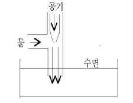

수산양식기사 (2006-03-05 기출문제)
1과목: 어류양식학
1. 잉어가 가장 잘 자라는 수온 범위는?
- 15~18℃
- 18~20℃
- 20~25℃
- 25~28℃
(정답률: 77%)

2. 가물치 치어의 수용밀도로 가장 적절한 것은?
- 3cm - 300마리/m2
- 5cm - 50마리/m2
- 15cm - 15마리/m2
- 25cm - 10마리/m2
(정답률: 77%)
3. 방어양식이 성행해지자 여러 가지 질병이 큰 문제로 되고 있는데 다음 중 질병을 일으키는 것과 거리가 먼 것은?
- 담수유입이 적은 양식장
- 수용밀도가 높은 양식장
- 장기간 연작한 양식장
- 관리가 충분하지 못한 양식장
(정답률: 94%)
4. 영양소인 단백질에 함유된 질소(N) 성분의 평균값은 어느정도 인가?
- 약 11%
- 약 16%
- 약 21%
- 약 26%
(정답률: 82%)
5. 미지성장인자(U.G.F)의 효과를 위해서 쓰일 수 있는 사료의 원료는?
- 효모
- 어분
- 육분 및 골분
- 기름짠 찌꺼기
(정답률: 90%)
6. 무지개 송어 치어 100kg을 방양하여 100일 동안 400kg 성장하였다. 이때 사료량은 600kg 이였다. 사료효율(%)은 얼마인가?
- 83
- 17
- 66
- 50
(정답률: 75%)
7. 다음 중 담수어의 먹이생물로 가장 오래전부터 사용하여 온 종류는?
- Artemia
- Daphnia
- Rotifer
- Chlorella
(정답률: 66%)
8. 다음 중 몸무게 30~50g의 은어를 양성할 때 1일 먹이 공급율이 가장 적당한 것은? (단, %는 어체중 기준)
- 수온 10℃일 때 4~5%
- 수온 15℃일 때 1~2%
- 수온 20℃일 때 1~2%
- 수온 27℃일 때 4~5%
(정답률: 50%)
9. 은어의 양식에서 사료 급이 시의 주의사항과 거리가 먼 것은?
- 여름철에는 사료의 변질 우려가 있으므로 한꺼번에 구입하지 말아야 한다.
- 수온이 26℃이상으로 올라가면 한 낮에 사료를 최대로 급이하며 성장속도를 높인다.
- 배합사료 급이 시 5% 정도의 피드오일(기름)을 첨가한다.
- 자동사료급여기를 사용하더라도 급여량의 과부족을 관찰한다.
(정답률: 82%)
10. 활어 운반에 쓰이는 냉각 마취는 어느 종류에 이용되어 오고 있는가?
- 뱀장어
- 잉어
- 송어
- 연어
(정답률: 84%)
11. 금붕어의 초기 선별은?
- 색깔 위주로 한다.
- 크기위주로 한다.
- 전체적인 모양 위주로 한다.
- 꼬리형태 위주로 한다.
(정답률: 66%)
12. 잡종(hybrid) 유도시 그 산업성은?
- 잡종우성
- 잡종열성
- 잡종약세
- 잡종강세
(정답률: 74%)
13. 넙치의 자연산란 수온 범위는?
- 8~10℃
- 11~17℃
- 18~22℃
- 23~25℃
(정답률: 74%)
14. 다음 바르게 설명된 것은?
- 어류의 일반적인 1일 사료 공급량은 건조사료 중량으로 몸무게의 10~15% 범위지만, 어릴 때에는 더 먹는다.
- 어류의 일반적인 1일 사료 공급량은 건조사료 중량으로 몸무게의 1~5% 범위지만, 어릴 때에는 조금 적게 먹는다.
- 어류의 일반적인 1일 사료 공급량은 건조사료 중량으로 몸무게의 10~15% 범위지만, 어릴 때에는 조금 적게 먹는다.
- 어류의 일반적인 1일 사료 공급량은 건조사료 중량으로 몸무게의 1~5% 범위지만, 어릴 때에는 더 먹는다.
(정답률: 79%)
15. 다음 중 수온이 10℃이하나 28℃이상 되면 저면의 모래속에 잠입하는 습성을 가진 어류는?
- 자주복
- 참돔
- 넙치
- 숭어
(정답률: 68%)
16. 식물성 먹이생물을 소규모로 순수배양 할 경우 배양액의 부피는 용기 전체 부피의 약 몇 정도 되어야 편리한가?
- 1/2
- 1/3
- 1/4
- 1/10
(정답률: 65%)
17. 다음 중 우리나라에서 냉수성 어류의 양식에 가장 적합한 수온 및 수질 조건을 갖춘 곳은?
- 연중 수온이 5~10℃로 물의 경도가 낮은 곳
- 수온 범위가 0~18℃의 범위인 계곡수를 이용할 수 있는 곳
- 수온 범위가 0~20℃의 범위인 하천수를 이용할수 있는 곳
- 수온 범위가 12~18℃인 지하수로 물의 경도가 높은 곳
(정답률: 83%)
18. 초어 인공 채란시에 성성숙 촉진호르몬으로 사용할 수 없는 것은?
- 어류의 뇌하수체
- 갑상선 호르몬
- 고나도 트로핀
- HCG
(정답률: 50%)
19. 조피볼락의 친어관리 및 생태에 관한 설명 중 잘못 된 것은?
- 친어 대상은 자연에서 포획한 것이나 종묘 생산하여 양식된 것으로 한다.
- 교미시기의 사육수온은 10~13℃를 유지시킨다.
- 출산시기의 사육수온은 13~15℃를 유지시킨다.
- 친어의 교미 후 즉시 체내에서 미성숙 난의 수정이 이루어진다.
(정답률: 84%)
20. 원심펌프의 취급에서 소요유량예측이 잘못 되었을 경우 다음 중 어떤 대책이 필요한가?
- 스트레이너, 풋벨브 등 흡입배관을 확인, 이물질을 제거한다.
- 양정계산을 다시 해보고 필요시 배관을더 큰 지름으로 교체한다.
- 유량이 더 큰 펌프로 교체하고 한 대를 더 설치하여 병렬운전을 고려해 본다.
- 임펠라 상태를 확인해 보고 파손 상태나 마멸상태가 심한 경우 신품으로 교체한다.
(정답률: 72%)
2과목: 무척추동물양식학
21. 진주담치의 학명은?
- Mytilus coruscus
- Crenamytilus grayanus
- Anadara subcrenata
- Mytilus edulis
(정답률: 65%)
22. 다음 중 가리비 채묘치패의 관리방법으로 바르지 못한 것은?(오류 신고가 접수된 문제입니다. 반드시 정답과 해설을 확인하시기 바랍니다.)
- 치패는 각장 7~8mm로 되면 부착기에서 떼어 채롱에 옮겨 관리한다.
- 수하 양성용 종묘는 크기가 클수록 좋다.
- 부착기에서 떨어지는 치패를 수용 관리하는 중간양성과정은 필요 없다.
- 복원중
(정답률: 10%)
23. 문어를 남해안에서 양식할 때 춘계양식과 추계 양식으로 구분해서 양식하는 이유는?
- 성장이 빠르기 때문
- 종묘의 확보 때문
- 하계수온이 높기 때문
- 소유의 성기 때문
(정답률: 76%)
24. 단련종굴의 생산과정을 4단계로 나눌 때 3번째에 오는 것은?
- 채묘예보
- 해적구제
- 단련
- 채묘
(정답률: 90%)
25. 수확기의 후반기에 수확한 참굴은 가공용으로만 주로 쓰이는데 그 주된 이유는?
- 맛이 가장 좋은 시기이기 때문
- 생식소가 발달해 있기 때문
- 수분이 연 중 가장 많기 때문
- 글리코겐이 많기 때문
(정답률: 63%)
26. 다음 중 보리새우의 생활사 단계와 서식 장소가 바르게 짝지어진 것은?
- 산란 - 외해
- 배유생기 - 내해
- 치하,유하기 - 외해
- 성체 - 내해
(정답률: 63%)
27. 기수의 염분농도 변화 범위 기준은?
- 0.5~25‰
- 0.5‰이하
- 10~20‰
- 40~25‰
(정답률: 84%)
28. 대합(백합)의 비만도가 가장 좋을 때는?
- 1~4월
- 6~7월
- 10월
- 11~12월
(정답률: 66%)
29. 큰우럭의 양식 가치성과 생태이다. 잘못된 것은?
- 키조개나 개조개와 같이 살고 있는 경우가 많다.
- 연안 개흙질로 된 물길 같은 곳에서 많이 서식한다.
- 폐수 등에 의한 환경변화의 저항성이 대합, 새고막, 굴 등에 비해 강하다.
- 부위 중 패주가 비싸므로 양식개발이 시급하다.
(정답률: 72%)
30. 참담치의 산란임계온도는?
- 10℃
- 6℃
- 14℃
- 8℃
(정답률: 54%)
31. 다음 고막의 주 서식지에 관한 내용으로 올바른 것은?
- 조하대 ~ 30m
- 조하대 ~ 50m
- 조간대
- 조간대 ~ 10m
(정답률: 58%)
32. 다음 중 새우 양식장에서 해적생물이 아닌 것은?
- 망둥어류
- 돔류
- 꽃게
- 문어
(정답률: 44%)
33. 내만에서 주로 일어나는 적조 중 2·k 적조 생물의 주종을 이루는 것은?
- 규조류
- 편모조류
- 녹조류
- 남조류
(정답률: 66%)
34. 전복류의 자연 서식장으로 적합하지 않는 것은?
- 외양성인 곳
- 암초가 많은 곳
- 해수의 유통이 좋은 곳
- 담수의 유입이 있는 부영양화 된 곳
(정답률: 88%)
35. 바지락의 치패 관리법으로 틀린 것은?
- 대량 발생한 치패는 안전한 장소로 옮겨서 관리한다.
- 치패를 옮기는 곳은 개흙질이 많은 곳이 좋다.
- 치패를 이식해서 관리할 경우 1m2당 5,000~10,000개체 정도가 알맞다.
- 종묘로서는 장형인 것이 좋다.
(정답률: 54%)
36. 해삼의 종묘생산에 관한 내용으로 바르게 설명된 것은?
- 자연발생 종묘는 바위나 자갈이 분포하지 않는 저질에 주로 착생한다.
- 자연종묘 채집에는 섶 다발과 같은 채묘기를 사용한다.
- 부착생활기에는 먹이를 먹지 않기 때문에 장소에 상관없다.
- 채묘기는 잡목가지로 만들어서 물에 자유롭게 띄워 놓는다.
(정답률: 77%)
37. 다음 중 진주패 주로 이용되는 삽핵 위치가 아닌 것은?
- 생식소 부근
- 장관부근
- 소화맹낭 부근
- 외투막
(정답률: 70%)
38. 가리비의 채란수온 범위로 가장 알맞은 것은?
- 3~8℃
- 5~10℃
- 7~12℃
- 9~14℃
(정답률: 55%)
39. 성게류(Echinoidea)의 부화유생에 맞지 않는 먹이는?
- Clamydomonas sp.
- Chaetoceros sp.
- Nitizschia sp.
- Calanus sp.
(정답률: 72%)
40. 바지락 성패의 서식적지로서 맞지 않는 것은?
- 육수의 영향을 받는 파도가 조용한 내만
- 해수와 유기물의 원활한 순환을 위해 지반 변동이 심한 곳
- 해수의 유통이 좋고 환원층의 발달이 적은 곳
- 썰물시 2~3시간 노출되는 곳부터 수심 3~4m 사이로 지반이 안정되어 있는 곳
(정답률: 75%)
3과목: 해조류양식학
41. 다시마 양성법 중 성숙시기가 가장 빠른 것은?
- 2년 양식
- 촉성 양식
- 억제배양 양식
- 1년 양식
(정답률: 80%)
42. 김양식의 엽면살포식 시비방법에서 가장 효과적인 것은?
- 김발이 노출된 직후
- 김발이 1~2시간 노출될 때
- 김발이 3~4시간 노출될 때
- 김발이 5~6시간 노출될 때
(정답률: 64%)
43. 미역양식에서 잎자르기 수확을 할 때의 절단부위는?
- 엽체의 중간 부분
- 포자엽의 바로 아래 부분
- 줄기에서 생장대 윗부분
- 부착기만 남게 한다
(정답률: 87%)
44. 김의 생리장애가 천천히 생기게 되는 COD 함유량 기준은?
- 3ppm 초과
- 3ppm 미만
- 2ppm 초과
- 2ppm 미만
(정답률: 65%)
45. 사상체가 잘자라던 조가비에 녹색의 반점이 생기는 녹반병에 대한 적절한 조치는?
- 직사광선에 15~20분간 쬔 후 정상 배양을 한다.
- 담수에 1~2일 담가둔다
- 영양제를 공급하며 어둡게 한다.
- 마이신(1cc 중 10만 단위)을 1/5,000 준다.
(정답률: 60%)
46. 김의 사상체가 어떤 원인으로 죽을 때 제일 먼저 띄는 색은?
- 녹색
- 백색
- 붉은색
- 황색
(정답률: 70%)
47. 미역종묘 배양과정에서 수온이 높아져 감에 따른 가장 우선적으로 대처해야 하는 것은?
- 틀을 자주 뒤바꾸어 준다.
- 물갈이를 1주일에 2회 이상으로 한다.
- 시비를 자주하여 종묘를 튼튼하게 한다.
- 광선을 어둡게 관리한다.
(정답률: 67%)
48. 냉장발의 설치와 관리에 있어서 적정한 조치라고 할 수 없는 것은?
- 씨발은 밀봉한 채로 어장에 운반한다.
- 출고 후 3, 4시간이내에 발을 설치한다.
- 생장촉진을 위해서 무노출 상태로 설치한다.
- 1월 중, 하순(수온 10℃ 이하)에서 배게 붙은 유아가 있는 씨발을 설치한다.
(정답률: 35%)
49. 김 어장에 질소를 시비할 때 주의해야 할 사항은?
- 질소만 시비한다.
- 질소 : 인산 = 1 : 1로 시비한다.
- 질소 : 인산 = 7~10 : 1로 시비한다.
- 질소 : EDTA = 15 : 1로 시비한다.
(정답률: 78%)
50. 청각에 관한 설명 중 틀린 것은?
- 청각은 대부분의 해조류와 마찬가지로 세대교번을 하면서 성육번식 한다.
- 청각의 배우자낭은 암수 이체의 경우와 암수 동체의 경우가 있다.
- 청각의 배우자낭이 나타나는 시기는 초여름에서 초겨울까지다.
- 청각의 성숙정도를 외관상 쉽게 구별할 수 없다.
(정답률: 67%)
51. 미역의 해황변동과 풍흉관계 설명 중 틀린 것은?(오류 신고가 접수된 문제입니다. 반드시 정답과 해설을 확인하시기 바랍니다.)
- 수온이 높은 지방에서는 배우체 발아시기에 수온이 높으면 미역작황에 좋다.
- 추운지방에서는 1, 2월의 수온이 평년보다 높을수록 좋다.
- 유주자가 방출기에 폭풍일수가 많으면 다음 해 작황에 해롭다.
- 2~5월 동안에 맑은 날씨가 많은 해에 풍작이 된다.
(정답률: 79%)
52. 다시마 포자의 부유밀도와 배우체의 부착밀도가 미역과 비교할 때 어떤 관계가 있는가?
- 포자의 밀도가 2배일 때 부착밀도는 1/2이 된다.
- 포자의 부유밀도가 부착밀도는 2배가 된다.
- 포자의 부유밀도가 부착밀도는 미역과 유사하다.
- 포자의 부유밀도가 미역과 같을 때 부착밀도는 2배가 된다.
(정답률: 47%)
53. 우리나라 해역에서 다시마 양식을 할 때 솎아주기 기준으로 가장 적절한 착생밀도는?
- 1m당 13~15개체 정도
- 1m당 60~90개체 정도
- 1m당 20~50개체 정도
- 1,m당 100개체 전후
(정답률: 69%)
54. 청각의 생활사의 순서이다. 맞은 것은?
- 청각→유주자→배우자→아포체→청각
- 청각→배우자낭→배우자→접합자→청각
- 청각→과포자→중성포자→청각
- 청각→유주자→접합자→배우체→청각
(정답률: 71%)
55. 영양분이 부족에 의하여 발생하는 김 사상체의 질병은?
- 황반병
- 닭살
- 녹변병
- 적변병
(정답률: 55%)
56. 미역 종묘 가이식의 필요성에서 볼 때 그 비중이 가장 낮은 것은?
- 미역 조묘의 배양수조나 탱크를 김의 인공채묘에서 빨리 이용하기 위하여
- 아포체나 유엽의 성장을 촉진시키기 위해
- 부니와 잡생물의 제거 작업 또는 싹녹음 예방을 위해
- 씨줄을 어미줄에 감을 때의 종묘 손상을 막기 위해
(정답률: 82%)
57. 김 양식장에서 수온과 김 성엽의 성장관계를 바르게 설명한 것은?
- 15℃ 이상에서 가장 잘 자란다.
- 12~13℃에서 가장 잘 자란다.
- 10℃ 이하가 좋고 4℃ 이하에서 가장 잘 큰다.
- 5~8℃에서 가장 잘 크며 4℃ 이하에서는 성장이 늦다
(정답률: 60%)
58. 조가비사상체의 과포자 잠입량은 얼마나 적당한가?
- 1~2개/cm2
- 1개/mm2
- 10개/cm2
- 10개/mm2
(정답률: 53%)
59. 뜬흘림발 중 연구조식의 장점은?
- 내파성이 강하고 시설규모를 자유롭게 조절할 수 있다
- 파도에는 약하지만 성장이 빠르다
- 내만에 적합하고 소규모의 양식 시설로서 적당하다
- 조류소통이 좋고 시설비가 절감된다.
(정답률: 65%)
60. 다시마 양식의 해적생물로 가장 피해를 주는 것은?
- 히드라충류
- 매생이
- 규조류
- 파래
(정답률: 78%)
4과목: 양식장환경
61. 다음 해조류중 배우체는 없고 포자체만 존재하는 것은?
- 파래
- 미역
- 모자반
- 김
(정답률: 52%)
62. 파래속(Enteromorpha)의 생활사 중 감수분열이 일어나는 때는?
- 접합자의 분열시
- 영양세포의 분열시
- 조포체의 유주낭 모세포의 분열시
- 암,수 배우체의 배우자낭 모세포의 분열시
(정답률: 24%)
63. 다음 중 분류가 잘못된 것은?
- 두족류-앵무조개
- 굴족류-뿔조개
- 복족류-따개비
- 부족류-재첩
(정답률: 48%)
64. 다음 어류 중 턱이 없는 종은?
- 가오리
- 뱀장어
- 메기
- 칠성장어
(정답률: 52%)
65. 발전어류에 대한 설명 중 잘못된 것은?
- 스스로 발전기관을 갖는다.
- 시끈가오리, 홍어류 등에서 볼 수 있다.
- 전기뱀장어의 경우 앞쪽이 (-)극이고, 뒤쪽이 (+)극이면, 전류는 머리부분에서 꼬리뒷부분으로 흐른다.
- Hunter's organ, Sach's organ 등은 발전기관의 부분이다.
(정답률: 57%)
66. 다음 중 산란수가 가장 적은 어류는?
- 잉어
- 참돔
- 송어
- 넙치
(정답률: 36%)
67. 갑각류의 몸의 특징 중 맞는 것은?
- 체절은 두부, 흉부, 복부로 나누어지고 복부의 각절에는 한쌍씩의 부속지가 있다.
- 체절은 두부, 흉부, 복부로 나누어지고 복부의 각절에는 두쌍씩의 부속지가 있다.
- 체절은 두부, 흉부로 나누어지고 복부의 각절에는 한쌍씩의 부속지가 있다.
- 체절은 두부, 흉부로 나누어지고 복부의 각절에는 두쌍씩의 부속지가 있다.
(정답률: 40%)
68. 대규모의 색이회유를 하는 대양성 어류는?
- 정어리
- 새치류
- 연어, 송어류
- 뱀장어류
(정답률: 45%)
69. 어류의 창자에서 분비되는 소화효소는?
- 펩신
- 아밀라제
- 트립신
- 라파제
(정답률: 43%)
70. 갈조류의 특징을 설명한 것 중 옳은 것은?
- 동화산물은 전분이다.
- 세포벽 물질은 셀룰로오스 외에 알긴이라고 하는 특유한 물질을 가지기도 한다.
- 모든 갈조류는 유성, 무성생식을 한다.
- 색소제는 Chlorophyll a 및 b를 갖는다.
(정답률: 61%)
71. 다음 중 고막류(고막, 새고막, 피조개 등) 양성시 피해를 줄 수 있는 해적생물로 가장 거리가 먼 것은?
- 불가사리, 꽃게
- 어류, 물새
- 긴얼굴갯지렁이
- 부착성 석회관 갯지렁이류
(정답률: 44%)
72. 가슴지느러미에 뾰쪽한 침을 가지고 있고 또 이곳에 독선이 있어서 찔리면 매우 아픈 통증을 느끼게 하는 우리나라 특산종 어류는 어느 것인가?
- 메기
- 쑤기미
- 붕장어
- 퉁가리
(정답률: 44%)
73. 다음 중 치설이 없는 종류는?
- 군부
- 소라
- 전복
- 바지락
(정답률: 58%)
74. 어류의 혈액내 헤모글로빈은 산소와 결합속도에서 환경수의 pH와 어떤 관계를 보이는가?
- pH의 변화와 산소와의 친화력 사이는 관계가 없다.
- pH가 낮을수록 산소와의 친화력은 커진다.
- pH가 낮을수록 산소와의 친화력은 작아진다.
- pH가 낮아짐에 따라 산소와의 친화력은 처음에는 작아지지만 나중에는 커진다.
(정답률: 57%)
75. 수온보다 일조시간을 조절하여 산란기를 조절할 수 있는 어류는?
- 금붕어
- 은어
- 잉어
- 메기
(정답률: 54%)
76. 다음 동물 중 담륜자 유생기를 거쳐서 변태하는 것은 어느 종류인가?
- 새우류
- 조개류
- 불가사리류
- 성게류
(정답률: 67%)
77. 새파의 모양과 어류가 짝지어져 있는 것 중 틀린 것은?
- 가늘고 긴 새파 - 정어리, 멸치, 밴댕이
- 새파의 배열이 드물다 - 보리멸, 노랑촉수, 감성돔, 문절망둑
- 퇴축되어 있거나 전연 소실되어 있다 - 매퉁이, 갈치, 쑤기미
- 가늘고 긴 새파 - 여름철 돌묵상어류
(정답률: 32%)
78. 순수한 재연성 변태만을 하는 어류는?
- 개복치
- 뱀장어
- 당멸치
- 문치가자미
(정답률: 38%)
79. 체내에 요소를 가짐으로서 환경수에 대한 삼투압 조절을 하고 있는 종류는?
- 당멸치
- 홍어
- 여울멸
- 풀잉어
(정답률: 56%)
80. 새우류의 체절구성을 올바르게 나타낸 것은?
- 두부 5개 + 흉부 7개 + 복부 8개
- 두부 5개 + 흉부 8개 + 복부 7개
- 두부 7개 + 흉부 5개 + 복부 8개
- 두부 7개 + 흉부 8개 + 복부 5개
(정답률: 55%)
5과목: 수산질병학
81. 천해 양식장에서 저질이 검은 색을 띄는 주 이유는?
- 저질 중에 유기물이 합성되었기 때문
- CH4가 발생하여 저질 중에 축적하였기 때문
- 호기성 세균의 작용으로 유기물이 무기물로 변했기 때문
- 저질중 H2S가 철이온과 결합하였기 때문
(정답률: 64%)
82. 외부로부터 새로운 물을 공급할 때 여러 가지 잡물을 걸러 내기 위한 물리적인 여과의 목적으로 모래, 자갈 여과조가 유효하게 쓰이는데, 여과조가 막히는 것을 방지하기 위해서는 다음 중 어떤 것을 사용해야 되나?
- 여과재 사이에 큰 공간이 생길 수 있도록 큰 자갈을 사용
- 여과용 자갈은 크기와 관계없이 여과조에 가득 채움
- 여과용 자갈은 크고 작은 것을 적당히 섞어서 사용
- 여과용 자갈은 입자가 작은 것만 골라서 사용
(정답률: 59%)
83. 다음의 수질 조사법에 관한 설명 중 옳은 것은?
- BOD는 시수 중에 있는 유기물이 호기성 미생물의 증식과 호흡작용에 의하여 소비되는 산소량이다.
- COD는 시수 중에 무기물이 화학물질에 의해 환원될 때 소비되는 산소량이다.
- 경도의 측정에는 시수 중에 칼륨이온과 나트륨이온의 총량을 염화칼슘의 양으로 환산하는 방법이다.
- pH 비색 측정법 중 지시약 BTB는 산성쪽으로 청색을 나타낸다.
(정답률: 62%)
84. 물을 많이 사용하는 대규모 배양장의 물 여과방식으로서 적당한 것은?
- 완속모래 여과
- 고속모래 여과
- 회전원판 여과
- 카드리지 여과
(정답률: 58%)
85. Free-Ammonia(NH3)에 대하여 다음 중 틀린 것은?
- NH3의 농도가 높아지면 어류에게는 더 유독하다.
- NH3의 농도는 수온이 높아지면 증기한다.
- NH3의 농도는 pH가 증가하는데에 따라 감소한다.
- NH3의 농도가 동일수온, 동일 pH일 때 해수보다는 담수가 높다.
(정답률: 58%)
86. 다음 그림과 같은 장치를 무엇이라 하는가?

- 확산 에어레이션 장치
- 하향류 에어레이션 장치
- 벤튜리관 에어레이션 장치
- T자 에어레이션 장치
(정답률: 55%)
87. 다음 중 하천류에서만 볼 수 있는 생물은?
- 하루살이의 유충
- 플라나리아
- 멧모기의 유충
- 실지렁이
(정답률: 44%)
88. 오존 발생기를 이용한 오존 소독에 관한 내용으로 가장 적절한 것은?
- 수중현탁물질이 많을수록 효능이 크다
- 오존이 분해하면 물이 형성된다.
- 오존처리는 사육조 안에서 시행해야 한다.
- 오존이 남아 있으면 사육중의 어류나 무척추 동물에 해를 끼친다.
(정답률: 73%)
89. 다음 중 뱀장어 양식장의 물 변화에 관한 설명이 맞는 것은?
- 뱀장어의 식욕이 왕성해지고 성장이 촉진된다.
- 물 변화의 주 발생시기는 일반적으로 고수온기인 7~8월이다.
- 물 변화가 일어나는 곳의 플랑크톤 조성에 있어 동물 플랑크톤이 0.4~2.9‰이다.
- 물 변화가 잘 일어나지 않는 안정된 곳은 식물 플랑크톤의 주체가 미크로시스티스이다.
(정답률: 42%)
90. 양어장에서도 사용할 수 있고, 또 산업폐수 처리장에서 흔히 사용되는 여과조는?
- 활성오니 여과조
- 역여과 침수 여과조
- 수평 침수 여과조
- 회전원판 생물 여과조
(정답률: 44%)
91. 순환여과식 양어장에서 용수처리에 기여도가 가장 큰 생물은?
- 세균
- 플랑크톤
- 원생동물
- 조류
(정답률: 52%)
92. 다음 중에 양식장에서 발생하는 질산성 질소에 대하여 바르게 설명한 것은?
- 아질산-질소가 환원되어 생성된다.
- 무지개송어가 성장을 잘하기 위해서는 25~35ppm의 농도가 바람직하다.
- 잉어나 뱀장어 등 담수 어류는 50ppm 정도에서도 식욕을 잃게 된다.
- 탈질화 과정을 거치지 않으면 수중의 pH가 높아지게 된다.
(정답률: 48%)
93. 가두리 양식장에서 어장 노화방지 대책에 대한 적극적 방법이 아닌 것은?
- 자정작용 능력
- 양식생물 적정밀도 유지
- 과다먹이투여 억제
- 원활한 해류 소통 유지
(정답률: 50%)
94. 다음 중 천해 양식장에서 적조를 일으키는 대표적인 식물 플랑크톤을 선택하시오
- 갈조류
- 쌍편모조류
- 허족충류
- 유공충류
(정답률: 64%)
95. 노지 양어지에서 pH 측정은 하루 중 어느 때가 가장 좋은가?
- 해뜨기 전
- 한 낮
- 해질무렵
- 한밤중
(정답률: 43%)
96. 사육수조에서 고형 오물을 제거하는데 대한 설명으로 가장 적절한 것은?
- 오물의 제거에 영향을 미치는 요인은 어종이 가장 큰 문제이다.
- 오물 제거에는 고정 스크린 방법이 수질관리에 가장 효과적이다.
- 오물 제거 장치인 회전식 여과기는 스크린에 걸린 찌꺼기를 청소하면서 가동하는 것이 장점이다.
- 배출구에 모인 오물은 며칠 마다 한번씩 제거해 주는 것이 효율적이다.
(정답률: 72%)
97. 어류가 배설하는 암모니아는 주로 어떻게 변하여 어류에게 거의 무해하게 되는가?
- 암모니아-초산-질산
- 암모니아-질산-초산
- 암모니아-아질산-질산
- 암모니아-질산-아질산
(정답률: 56%)
98. 양어지 내에 산소가 물에 녹아 들어가는 속도와 양에 비례적인 요소가 아닌것은?
- 물의 표면적의 증가
- 수온의 상승
- 대기압력의 증가
- 포기량의 증가
(정답률: 67%)
99. 보상깊이는 보통 투명도의 몇 배 정도인가?
- 투명도와 같다
- 2배 정도이다
- 4배 정도이다
- 6배 정도이다
(정답률: 65%)
100. 순환여과 시스템에서 생물여과조 기능의 최종 목표는?
- 암모니아를 아질산으로 산화시킴
- 질산염을 암모니아로 환원시킴
- 질산염을 질소로 환원시킴
- 암모니아를 질산염을 산화시킴
(정답률: 60%)